Die Viva-Deluxe App
Anleitung für Mitarbeitende · Zeiten stempeln, Urlaub melden, Dokumente · Stand 17.10.2026
Kurz gesagt: Beim Ankommen Start, beim Gehen Stopp. Oder nach dem Einsatz
„Zeiten bestätigen“. Urlaub und Krankheit über „Urlaub“ unten. Lohnabrechnungen und Unterweisungen unter
„Dokumente“.
Adresse der App: app.viva-deluxe-reinigung.de/m – als Symbol auf den Startbildschirm legen
(siehe Anleitung „App installieren“). Die App gibt es auf Deutsch, Englisch, Rumänisch, Türkisch, Polnisch,
Kroatisch/Bosnisch/Serbisch und Bulgarisch: oben auf den Globus tippen.
1. Anmelden und eigene PIN festlegen
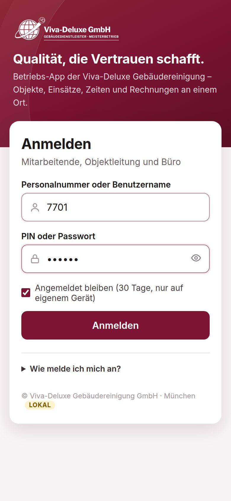
1Oben die Personalnummer, unten beim ersten Mal das Geburtsdatum als TTMMJJ
(12. April 1990 → 120490). „Angemeldet bleiben“ angehakt lassen → Anmelden.
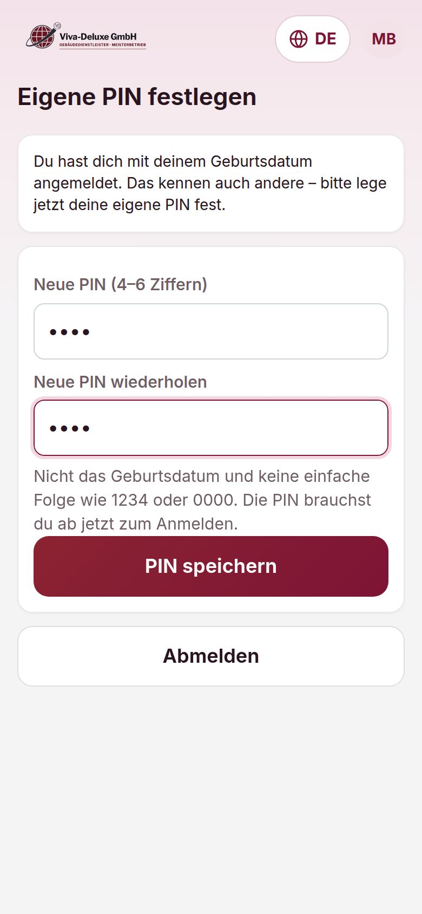
2Die App verlangt sofort eine eigene PIN (4–6 Ziffern). Zweimal eingeben →
PIN speichern. Ab jetzt immer mit dieser PIN anmelden.
Nicht erlaubt: das Geburtsdatum, 1234, 0000 und ähnliche Folgen. Die PIN niemandem sagen – sonst kann
jemand anderes für Sie stempeln. PIN vergessen? Im Büro melden, das Büro setzt eine neue.
Nach 5 falschen Versuchen ist die Anmeldung 15 Minuten gesperrt.
2. Die Startseite
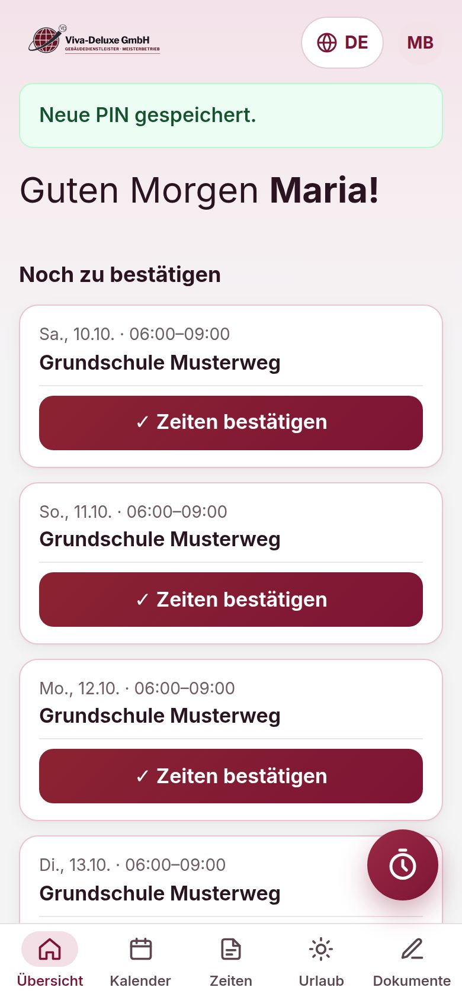
- „Noch zu bestätigen“: Einsätze der letzten 7 Tage ohne erfasste Zeit.
- „Heute“: die Einsätze von heute mit Objekt, Adresse und Uhrzeit.
- Unten rechts der runde Knopf mit der Uhr = Stoppuhr.
- Leiste unten: Übersicht · Kalender · Zeiten · Urlaub · Dokumente.
- Oben rechts die Initialen = Profil (Sprache, PIN ändern, Abmelden).
3. Stempeln: Start und Stopp
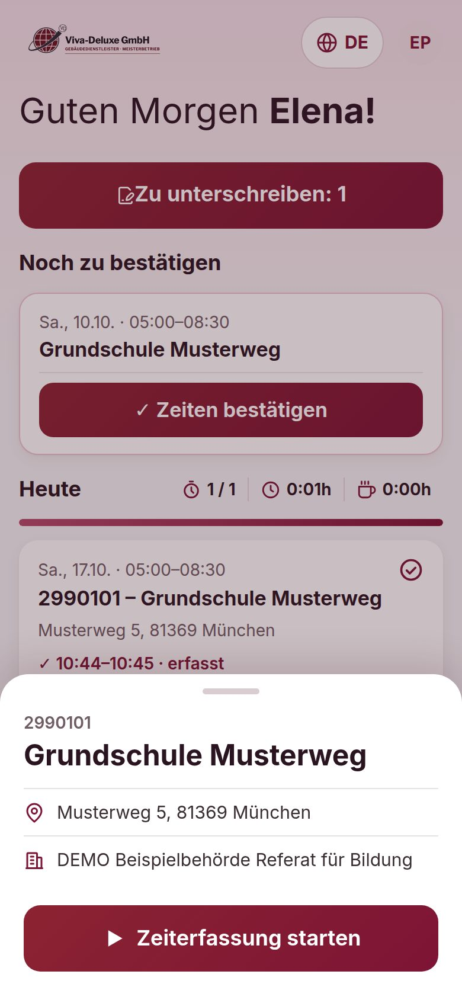
1Beim Ankommen auf die Uhr tippen. Das Objekt von heute steht schon da →
▶ Zeiterfassung starten.
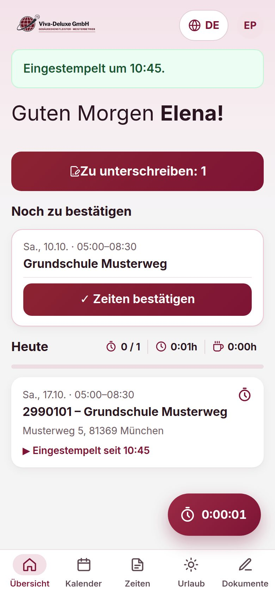
2„Eingestempelt um …“ – der Knopf zeigt die laufende Zeit. Die App darf jetzt
geschlossen werden.
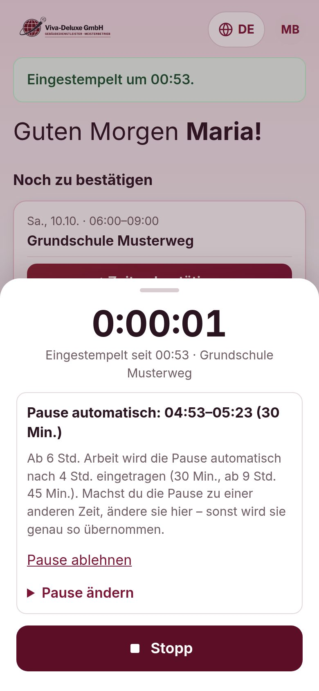
3Beim Gehen wieder auf die Uhr → ■ Stopp → kurz bestätigen.
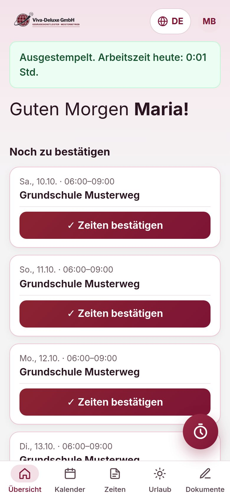
4„Ausgestempelt. Arbeitszeit heute: …“ – fertig.
Pause: Ab 6 Stunden Arbeit trägt die App die Pause automatisch ein (30 Min., ab 9 Std. 45 Min.).
„Pause ändern“, wenn sie zu einer anderen Zeit war.
Beim Start und Stopp fragt die App nach dem Standort – nur einmal in diesem Moment, um zu sehen,
ob Sie am Objekt sind. Es wird kein Weg aufgezeichnet. Gestempelt wird mit der Uhrzeit des Servers.
4. Ohne Stempeln: Zeit bestätigen
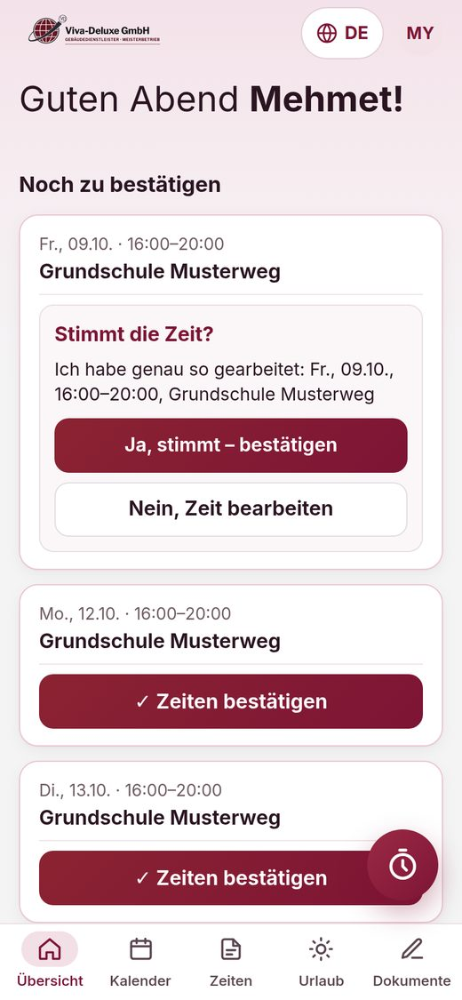
1Nach dem Einsatz „✓ Zeiten bestätigen“ → „Stimmt die Zeit?“ →
„Ja, stimmt – bestätigen“, wenn genau nach Plan gearbeitet wurde.
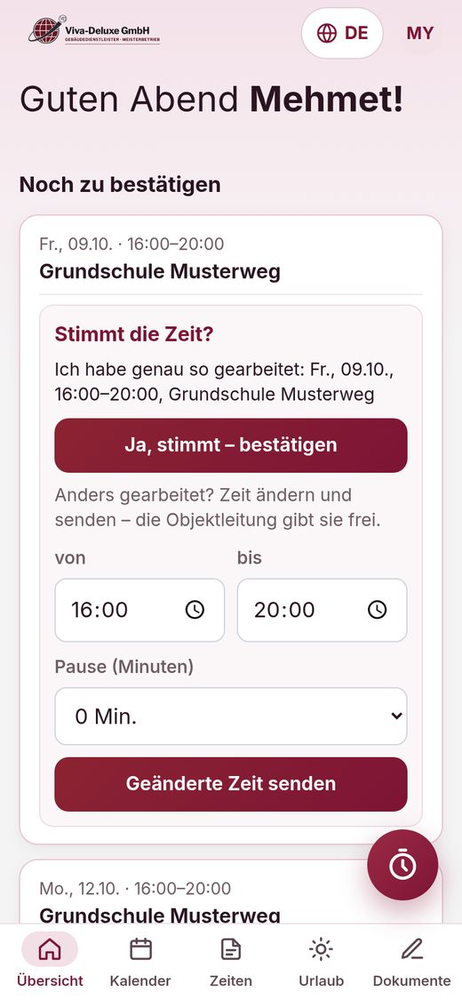
2Anders gearbeitet? „Nein, Zeit bearbeiten“: Beginn, Ende, Pause eintragen →
senden. Die Objektleitung gibt die Zeit frei.
Bitte nur bestätigen, was wirklich gearbeitet wurde – die Zeiten sind die Grundlage für den Lohn und werden
vom Zoll geprüft (§ 17 Mindestlohngesetz).
5. Urlaub und Krankheit
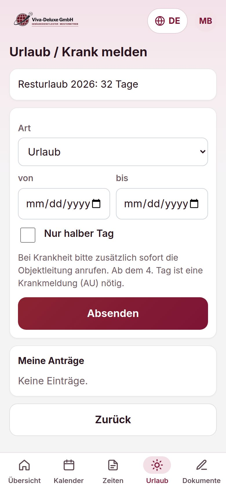
- Unten auf „Urlaub“. Oben steht der Resturlaub.
- Art wählen (Urlaub oder Krank), von – bis, ggf. „Nur halber Tag“ → Absenden.
- Urlaub ist ein Antrag – unter „Meine Anträge“ steht, ob er genehmigt ist. Push-Nachricht kommt aufs Handy.
Krank: zusätzlich sofort die Objektleitung anrufen. Ab dem 4. Tag ist eine Krankmeldung vom
Arzt nötig.
6. Dokumente, Lohnabrechnung, Stundenliste
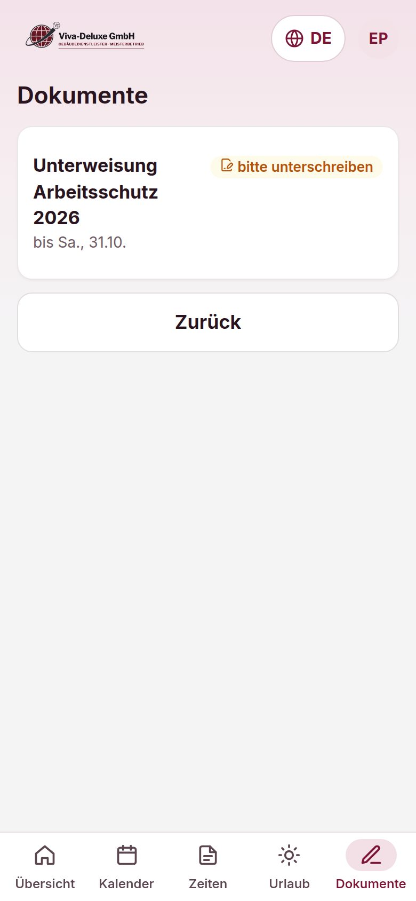
- Dokumente: Unterweisungen zum Lesen und Unterschreiben (mit dem Finger), dazu die
Lohnabrechnungen. Neue Dokumente öffnen sich beim Start der App von selbst.
- PDF antippen → oben „Teilen / Drucken“ zum Speichern oder Drucken, „‹ Zurück“ zur App.
- Zeiten: die eigene Stundenliste des Monats. Am Monatsende bittet die App, sie zu unterschreiben.
- Kalender: alle geplanten Einsätze der nächsten Wochen.
7. Profil: Sprache, PIN ändern, Abmelden
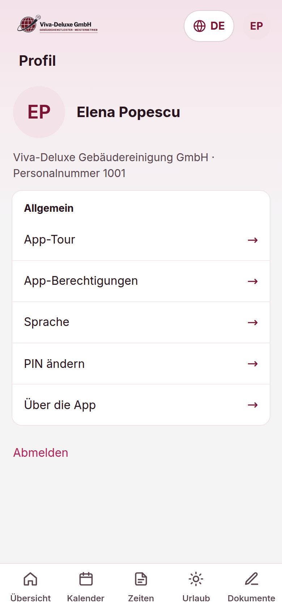
- Oben rechts auf die Initialen tippen.
- Sprache wechseln, PIN ändern (neue PIN zweimal eingeben), App-Berechtigungen
(Mitteilungen, Kamera, Standort erlauben).
- Abmelden nur auf fremden oder geteilten Handys.
Viva-Deluxe Gebäudereinigung GmbH · Fragen: Objektleitung oder Büro · Stand 17.10.2026